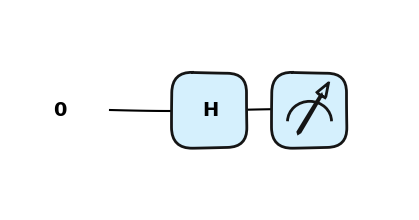
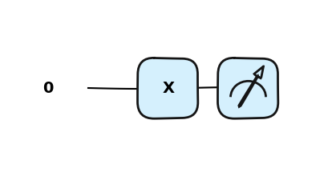
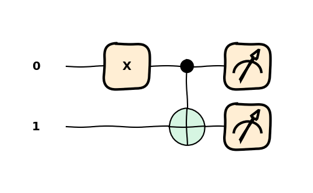
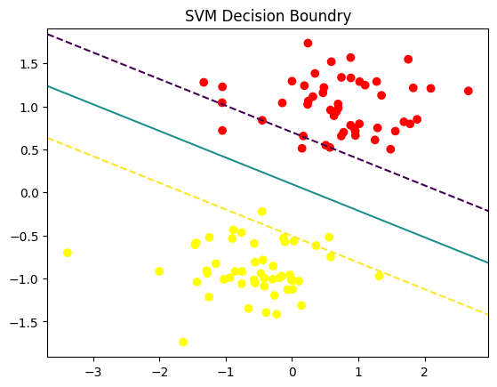

PennyLane to otwarto‑źródłowa biblioteka Pythona opracowana przez Xanadu dla kwantowego uczenia maszynowego, obliczeń kwantowych oraz chemii kwantowej.
Zapewnia wysokopoziomowy, intuicyjny interfejs do budowania hybrydowych modeli kwantowo‑klasycznych, łącząc obwody kwantowe z popularnymi frameworkami uczenia maszynowego, takimi jak PyTorch i TensorFlow.
PennyLane wprowadza pojęcie QNode (quantum node) – funkcji kwantowych, które zachowują się jak zwykłe funkcje Pythona i obsługują automatyczną różniczkowanie (autodiff).
Umożliwia uruchamianie modeli zarówno na symulatorach, jak i na rzeczywistym sprzęcie kwantowym (np. IBM Q, Amazon Braket i inne).
Dzięki PennyLane możesz: - budować wariacyjne algorytmy kwantowe,
- trenować kwantowe sieci neuronowe,
- eksplorować zaawansowane architektury kwantowego uczenia maszynowego.
Biblioteka stanowi potężny most między klasyczną sztuczną inteligencją a rosnącym światem obliczeń kwantowych.
PennyLane zawiera także spersonalizowaną wersję NumPy (pennylane.numpy), która obsługuje tablice śledzone gradientem, co ułatwia integrowanie obwodów kwantowych w procesach optymalizacji.
podstawowe importy bibliotek
import pennylane as qmlimport pennylane.numpy as np
🧪 Obwody kwantowe w PennyLane
Obwody kwantowe są implementowane jako funkcje kwantowe, zwane także QNode’ami.
Są to funkcje kwantowe zachowujące się jak standardowe funkcje Pythona i wspierające automatyczną różniczkację przy użyciu klasycznych narzędzi ML.
QNode’y są uruchamiane na różnych urządzeniach (devices), takich jak:
symulatory (np. default.qubit, lightning.qubit) oraz,
rzeczywisty sprzęt kwantowy (np. IBM Q, Amazon Braket, Xanadu).
Urządzenia są wymienne i określają, w jaki sposób dana funkcja kwantowa jest wykonywana.
Możemy zdefiniować nasz symulator — w tym przypadku użyjemy default.qubit.
Musimy także określić, ile kubitów chcemy użyć, korzystając z parametru wires.
Przykładowe urządzenia
default.qubit – symulator napisany w Pythonie
lightning.qubit – szybszy symulator napisany w C++
default.mixed – używany do symulacji mieszanych stanów kwantowych
dev = qml.device("default.qubit", wires=1)
## for example dev2 = qml.device("default.qubit", wires=3)dev3 = qml.device("lightning.qubit", wires=['q1', 'aux'])
Obiekt Qnode będziemy używać do definicji obwodów kwantowych. Obiekt ten wspiera wiele bibliotek do obliczeń numerycznych, tzw. interfejsów: - NumPy, - PyTorch, - TensorFlow, - JAX
Domyślnie QNodes używa interfejs NumPy. Dzięki niemu mamy dostęp do optymalizatorów domyślnych z biblioteki Pennylane. Pozostałe interferjsy wymagają użycia optymalizatorów z innych pakietów.
def qc(): # quantum circuitreturn qml.state()
wires oznacza kwantowy podsystem - czyli nasz pojedynczy kubit. Liczymy od 0 nie od 1.
Funkcja kwantowa może pobierać klasyczne pamaretry
Funkcja kwantowa może zawierać klasyczny flow (przepływ) twojego programu for czy if else.
dev = qml.device("default.qubit", wires=1)def quantum_circuit(): qml.Hadamard(wires=0)return qml.state()circ = qml.QNode(quantum_circuit, dev)circ()
array([0.70710678+0.j, 0.70710678+0.j])
from math import sqrtprint(circ()[0].real, 1/sqrt(2))print(circ()[0].real ==1/sqrt(2))
0.7071067811865475 0.7071067811865475
True
qml.draw(circ)()
qml.draw_mpl(circ)()
Inna wersja
dev = qml.device("default.qubit", wires=1)@qml.qnode(dev)def qc(): qml.Hadamard(wires=0)return qml.state()qc()
array([0.70710678+0.j, 0.70710678+0.j])
import matplotlib.pyplot as pltqml.drawer.use_style("pennylane_sketch")fig, ax = qml.draw_mpl(qc)()plt.show()
Matplotlib is building the font cache; this may take a moment.

dev = qml.device("default.qubit", wires=1)@qml.qnode(dev)def qc(): qml.Hadamard(wires=0)return qml.probs()qc()
array([0.5, 0.5])
DLa pustego obwodu
dev = qml.device("default.qubit", wires=1)@qml.qnode(dev)def qc():return qml.probs()results = qc()results
array([1., 0.])
użyj qml.sample() lub qml.counts() dla innych wariantów wyników.
Ilość wykonań obwodu sterowana jest w QNode za pomocą parametru shot, który może być liczbą jak również listą liczb. > Uwaga w wersji biblioteki <0.43 - parametr shot ustawiany jest na poziomie device.
dev = qml.device("default.qubit", wires=1)@qml.qnode(dev, shots=5)def qc(): qml.Hadamard(wires=0)return qml.sample()qc()
array([[1],
[0],
[0],
[0],
[1]])
dev = qml.device("default.qubit", wires=1)@qml.qnode(dev, shots=100)def qc(): qml.Hadamard(wires=0)return qml.counts()results = qc()
Kod naszej wartwy ukrytej w której użyliśmy obwodu kwantowego realizował następujące obiekty i funkcje:
import pennylane as qmln_qubits =2dev = qml.device("default.qubit", wires=n_qubits)@qml.qnode(dev)def qnode(inputs, weights): qml.AngleEmbedding(inputs, wires=range(n_qubits)) qml.BasicEntanglerLayers(weights, wires=range(n_qubits))return [qml.expval(qml.PauliZ(wires=i)) for i inrange(n_qubits)]
Obwody kwantowe składają się z rejestrów, które reprezentują poszczególne kubity.
Domyślnie kubity inicjalizujemy w stanie 0.
Operacje wykonywane na kubitach nazywamy bramkami.
Operacje te można wykonywać na jednym albo i wielu kubitach na raz.
Domyślnie będziemy optymalizować algortymy aby składały się z jak najmniejszej ilości bramek działających na dużą liczbę kubitów.
Graficznie można rozumieć realizację algorytmu jako stosowanie bramek na poszczególnych kubitach.
kibu2
W bibliotece PennyLane, obwody kwantowe reprezentowane są przez kwantowe funkcje, realizowane przez klasyczne funkcje w pythonie.
Schemat kodu penny lane możemy zapisać jako:
import pennylane as qmldef my_quantum_function(params):# Single-qubit operations with no input parameters qml.Gate1(wires=0) qml.Gate2(wires=2)# Two-qubit operation with no input parameter on wires 0 and 1 qml.TwoQubitGate1(wires=[0, 1])# A single-qubit operation with an input parameter qml.Gate3(params[0], wires=2)# Two-qubit operation with an input parameter on wires 0 and 1 qml.TwoQubitGate2(params[1], wires=[1, 2]) ... # Return the result of a measurementreturn qml.Measurement(wires=[0, 1])
Bramka X obraca kubit w kierunku osi na sferze Bloch’a o \(\pi\) radianów. Zmienia \(|0\rangle\) na \(|1\rangle\) oraz \(|1\rangle\) na \(|0\rangle\). Jest często nazywana kwantowym odpowiednikiem bramki NOT lub określana jako bit-flip.
dev = qml.device("default.qubit", wires=1)@qml.qnode(dev)def qc(): qml.X(wires=0)return qml.state()qc()
array([0.+0.j, 1.+0.j])
dev = qml.device("default.qubit", wires=1)@qml.qnode(dev)def qc(): qml.PauliX(wires=0)return qml.state()qc()
array([0.+0.j, 1.+0.j])
qml.draw_mpl(qc)()

Bramka Hadamarda
Bramka Hadamarda przetwarza stan \(|0\rangle\) na kombinacje liniowa (superpozycje) \(\frac{|0\rangle + |1\rangle}{\sqrt{2}}\), co oznacza, że pomiar zwróci z takim samym prawdopodobieństwem stanu 1 lub 0. Stan ten często oznaczany jest jako: \(|+\rangle\).
from pennylane import numpy as npdev = qml.device("default.qubit", wires=1)@qml.qnode(dev)def qc(phi): qml.RZ(phi=phi, wires=0)return qml.state()qc(np.pi/2)
array([0.70710678-0.70710678j, 0. +0.j ])
qml.draw_mpl(qc)(np.pi/2)
CNOT
Jedną z bramek realizującą zadania na dwóch kubitach jest bramka CNOT, która na bazie bitu kontrolnego decyduje czy zastosować operację X do drugiego kubitu.
import pennylane as qmlimport pennylane.numpy as npdev = qml.device('default.qubit', wires=2)@qml.qnode(dev)def circ(stan='0'):if stan =='1': qml.X(wires=0) qml.CNOT(wires=[0,1])# qml.CNOT(wires=[1,0])return qml.state()state = circ()print(state)
[1.+0.j 0.+0.j 0.+0.j 0.+0.j]
state = circ('1')print(state)
[0.+0.j 0.+0.j 0.+0.j 1.+0.j]
Magic ;)
import pennylane as qmlfrom pennylane import numpy as np dev = qml.device('default.qubit', wires=2, shots=100)@qml.qnode(dev)def qc():# qml.Hadamard(wires=0) qml.X(wires=0) qml.CNOT(wires=[0,1])#return qml.state()return qml.counts()qc()
/Users/seba/Documents/GitHub/technologiekwantowe/.venv/lib/python3.13/site-packages/pennylane/devices/device_api.py:193: PennyLaneDeprecationWarning: Setting shots on device is deprecated. Please use the `set_shots` transform on the respective QNode instead.
warnings.warn(
{np.str_('11'): np.int64(100)}
import matplotlib.pyplot as pltqml.drawer.use_style("sketch")fig, ax = qml.draw_mpl(qc)()plt.show()

import pennylane as qmlfrom pennylane import numpy as np dev = qml.device('default.qubit', wires=2, shots=100)@qml.qnode(dev)def qc(): qml.Hadamard(wires=0) qml.CNOT(wires=[0,1]) qml.X(wires=1)#return qml.state()return qml.counts()qc()
/Users/seba/Documents/GitHub/technologiekwantowe/.venv/lib/python3.13/site-packages/pennylane/devices/device_api.py:193: PennyLaneDeprecationWarning: Setting shots on device is deprecated. Please use the `set_shots` transform on the respective QNode instead.
warnings.warn(
import pennylane as qmlfrom pennylane import numpy as np dev = qml.device('default.qubit', wires=2, shots=100)@qml.qnode(dev)def qc(): qml.Hadamard(wires=0) qml.CNOT(wires=[0,1]) qml.X(wires=1) qml.Z(wires=1)#return qml.state()return qml.counts()qc()
/Users/seba/Documents/GitHub/technologiekwantowe/.venv/lib/python3.13/site-packages/pennylane/devices/device_api.py:193: PennyLaneDeprecationWarning: Setting shots on device is deprecated. Please use the `set_shots` transform on the respective QNode instead.
warnings.warn(
In a Jupyter environment, please rerun this cell to show the HTML representation or trust the notebook. On GitHub, the HTML representation is unable to render, please try loading this page with nbviewer.org.
/var/folders/53/b8z3c5xs0l51w2mzflnyk6400000gn/T/ipykernel_20306/3794771256.py:17: UserWarning: The following kwargs were not used by contour: 'color'
ax.contour(XX, YY, Z, color='k', levels=[-1,0,1], linestyles=['--','-','--'])

Kernel trick
Dla prawdziwych danych trudno oczekiwać aby były one liniowo separowalne.
Dlatego jednym z rozwiązań jest stworzenie odwzorowania do wyżej wymiarowej przestrzeni tak by dane w niej były już liniowo separowalne. Obliczenie takiej transformacji dla dowolnych danych jest bardzo trudne, dlatego możemy zastosować tzw kernel trick. Potrzebujemy tylko obliczyć iloczyn skalarny: \[ K(x,x') = <\phi(x), \phi(x')>\] bez jawnego wyznaczania \(\phi\).
x, x’ wektory wejściowe z oryginalnej przestrzeni
\(\phi(x)\) odwzorowanie do przestrzeni o wyższym wymiarze
\(K(x, x')\) funkcja jądrowa - kernel function - oblicza iloczy skalarny w zadanej przestrzeni.
In a Jupyter environment, please rerun this cell to show the HTML representation or trust the notebook. On GitHub, the HTML representation is unable to render, please try loading this page with nbviewer.org.
Kwantowy Embedding reprezentuje klasyczne dane jako stan (wektor) w przestrzeni Hilberta. Odwzorowanie, które generuje embedding nazywamy quantum feature map.
Feature map: \(\phi: X \to F\) gdzie \(F\) to nowa przestrzeń Hilberta stanów. \[ x \to \ket{\phi(x)} \]
W naszym przypadku to odwzorowanie realizują \(U_{\phi}(x)\) macierze kodowania kątowego. \[ \ket{0} \to U_{\phi}(x)\ket{0} \]
from sklearn.preprocessing import MinMaxScalerscaler = MinMaxScaler(feature_range=(0, np.pi))X_scaled = scaler.fit_transform(X)y_scaled =2* y -1X_train, X_test, y_train, y_test = train_test_split(X_scaled, y_scaled)
Rozważmy model kwantowy w postaci: \[
f(x) = \braket{\phi(x) | M | \phi{x} }
\]
Model może być realizowany jako wariacyjny obwód kwantowy.
Zamiast jednak trenować parametry dla takiego obwodu możemy wykorzystać kwantowy kernel który realizuje się przez SWAP test.
Zamiast SWAP testu możemy wykorzystać inny obwód Szczegóły tutaj